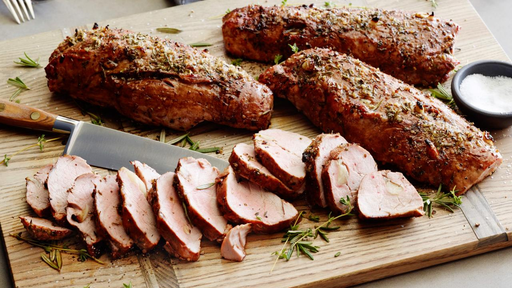

Balsamic Roast Pork Tenderloins

Description
A delicious way to eat meat. Great for family gatherings or even just
freezing them to have extra meals on hand. Easy enough for even the most
beginner cook to get a handle on and delicious enough for the most
advanced to enjoy!
Ingredients
- 4 1/2 lbs port tenderloins
- 4 tablespoons balsamic vinegar
- 4 tablespoons extra-virgin olive oil
- 8 cloves garlic, cracked
- Steak seasoning blend or coarse salt and black pepper
- 4 sprigs fresh rosemary leaves stripped and finely chopped
- 4 sprigs fresh thyme, leaves stripped and finely chopped
Steps
- Preheat oven to 500 degrees F.
-
Trim silver skin or connective tissue off tenderloins with a very sharp
thin knife.
-
Place tender loins on a nonstick cookie sheet with a rim. Coat
tenderloins in a few tablespoons of balsamic vinegar, rubbing vinegar
into meat. Drizzle tenderloins with extra-virgin olive oil, just enough
to coat. Cut small slits into meat and disperse chunks of cracked garlic
cloves into meat. Combine steak seasoning blend or coarse salt and
pepper with rosemary and thyme and rub meat with blend. Roast in hot
oven 20 minutes.
- Let meat rest, transfer to a carving board, slice and serve.
Back